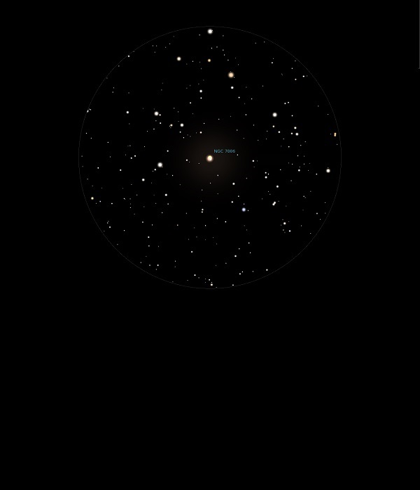

NGC 7006
Globular Cluster in Delphinus
NGC 7006
Mag 10.6
Caldwell 42
06/07/14
The last of three 'Cs' tonight and at the other end of
Delphinus from NGC 6934, Caldwell 47, this Globular Cluster is
much fainter, just a fuzy blob but in a very attractive star
studded FOV
Nice in 25mm with a wide field
25/08/16
A very faint Globular Cluster, not resolved in 12mm but quite
a distinct ball sitting in a nice starfield, the closest
bright star being HIP 103690 at Mag 7.75